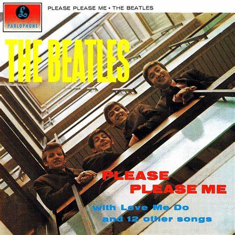
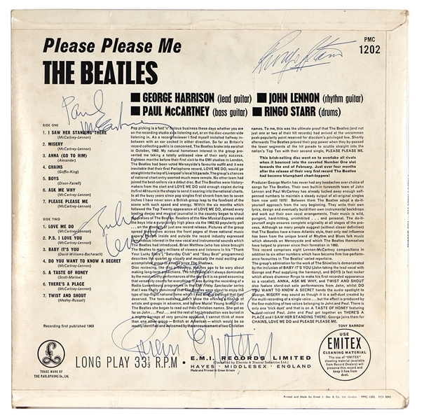
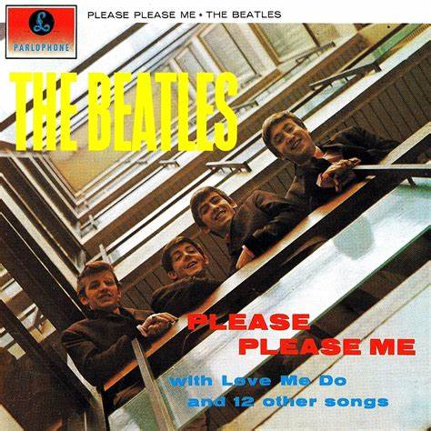
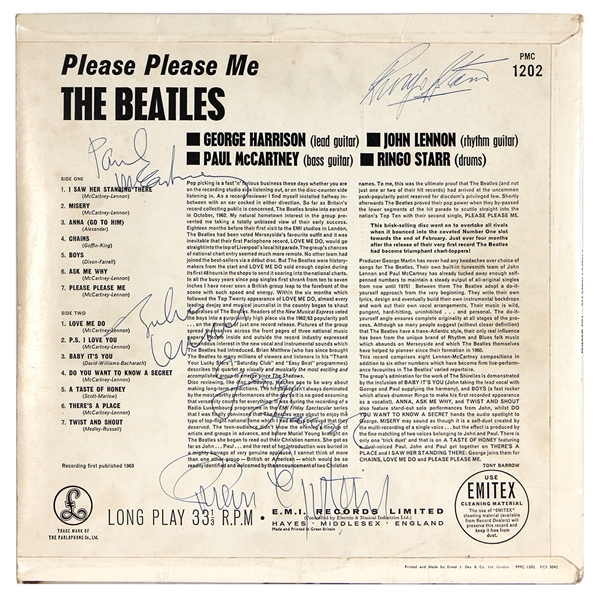

☰


"O primeiro álbum foi gravado em uma longa sessão de doze horas, que a última música a ser feita foi uma música chamada twist and shout, que quase me matou." John
"Todos nós dissemos: 'bem, e quanto a isso? e quanto a isso?', porque basicamente este álbum foi exatamente o que fizemos ao vivo nos clubes." George
"Oh deus, é isso, um pedaço de plástico. e esse pedaço de plástico era como ouro, você sabe. Você venderia sua alma. Você venderia sua alma para entrar nesse pequeno disco." Ringo
"John teve que salvar twist and shout até o último, e ele estava chupando zoobs o dia todo - aqueles pequenos comprimidos de garganta. e ele finalmente teve que fazer twist and shout sabendo que ele tinha que fazê-lo por último, porque isso apenas rasgaria sua garganta para fazê-lo. foi ótimo. Você ainda pode ouvir isso no disco." Paul
Menu
Please Please Me


Frases da Época
"O primeiro álbum foi gravado em uma longa sessão de doze horas, que a última música a ser feita foi uma música chamada twist and shout, que quase me matou." John
"Todos nós dissemos: 'bem, e quanto a isso? e quanto a isso?', porque basicamente este álbum foi exatamente o que fizemos ao vivo nos clubes." George
"Oh deus, é isso, um pedaço de plástico. e esse pedaço de plástico era como ouro, você sabe. Você venderia sua alma. Você venderia sua alma para entrar nesse pequeno disco." Ringo
"John teve que salvar twist and shout até o último, e ele estava chupando zoobs o dia todo - aqueles pequenos comprimidos de garganta. e ele finalmente teve que fazer twist and shout sabendo que ele tinha que fazê-lo por último, porque isso apenas rasgaria sua garganta para fazê-lo. foi ótimo. Você ainda pode ouvir isso no disco." Paul